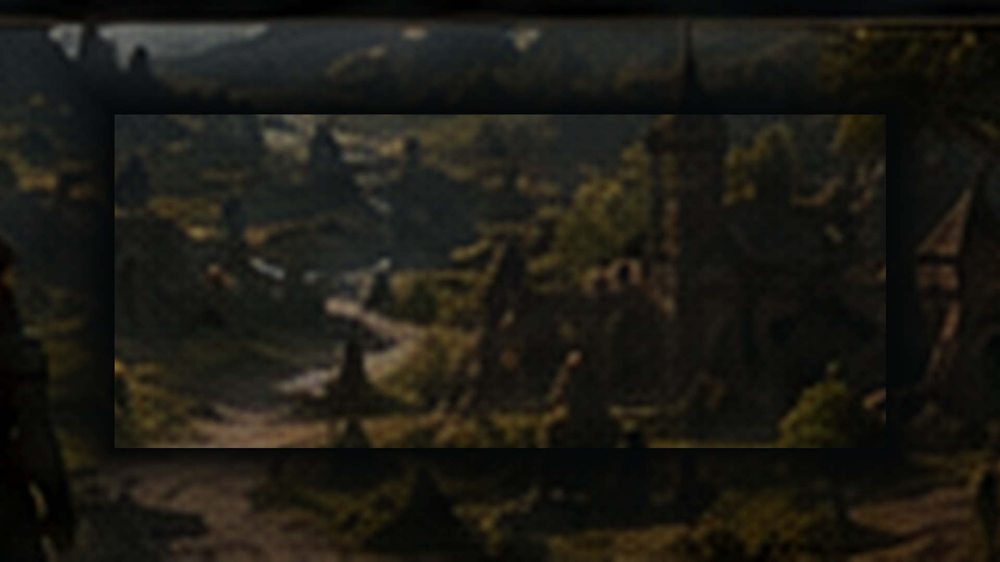

Inventory and Settings Reworked
The inventory interface received larger item displays, clearer selection highlights, smoother animations and a notice explaining that hotbar slots can be clicked directly. The settings menu now also displays controls and keybinds.